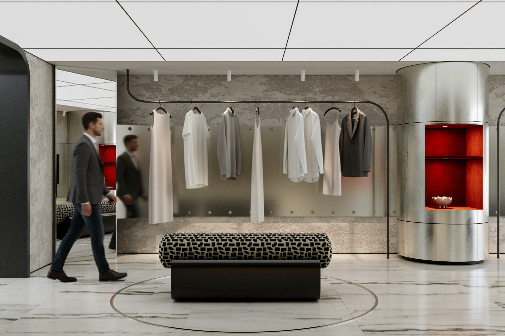
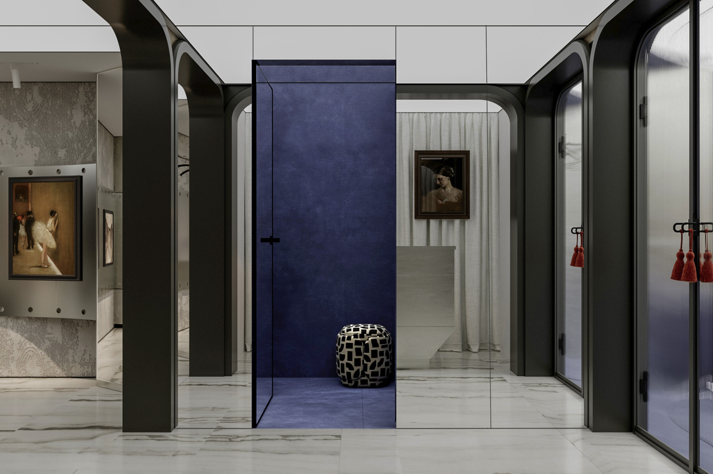
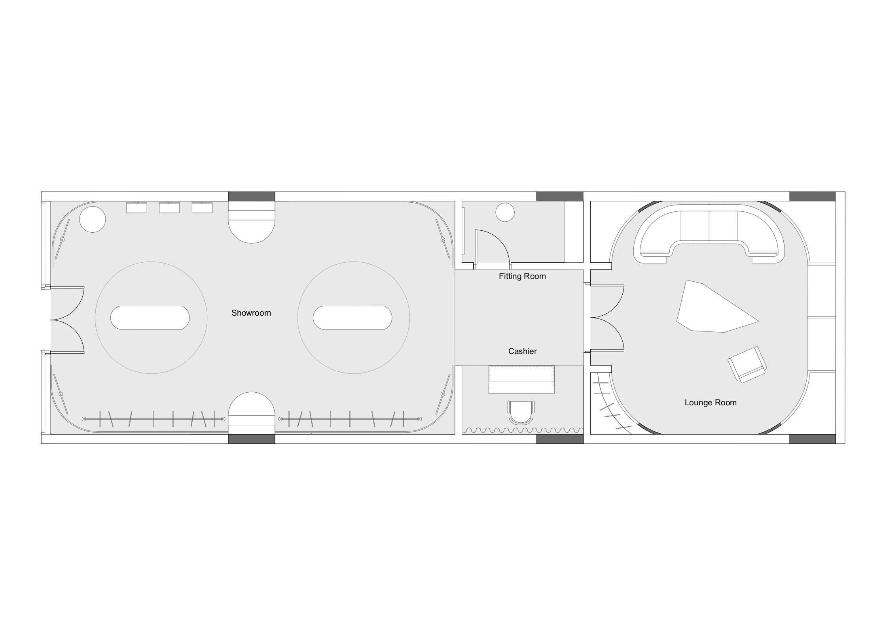
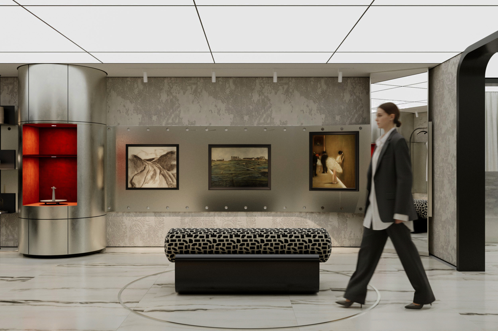
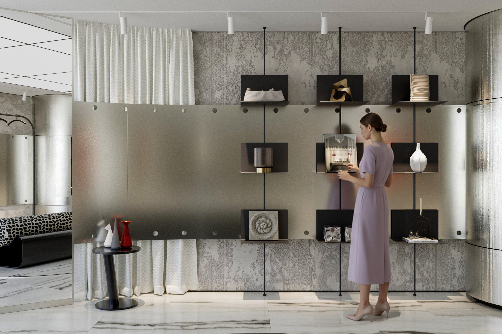
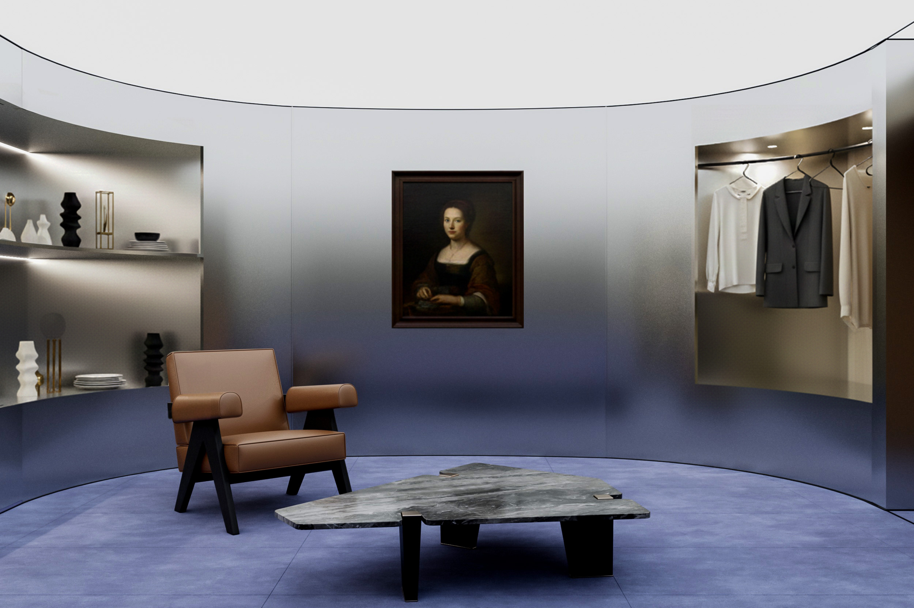
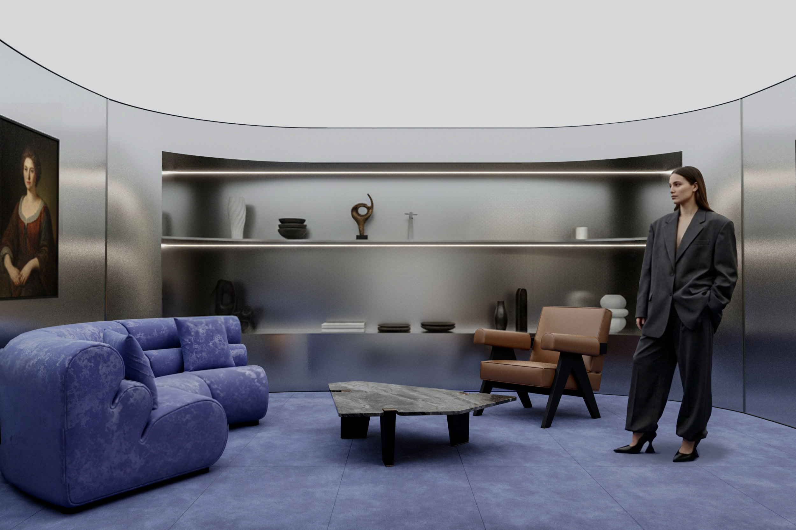
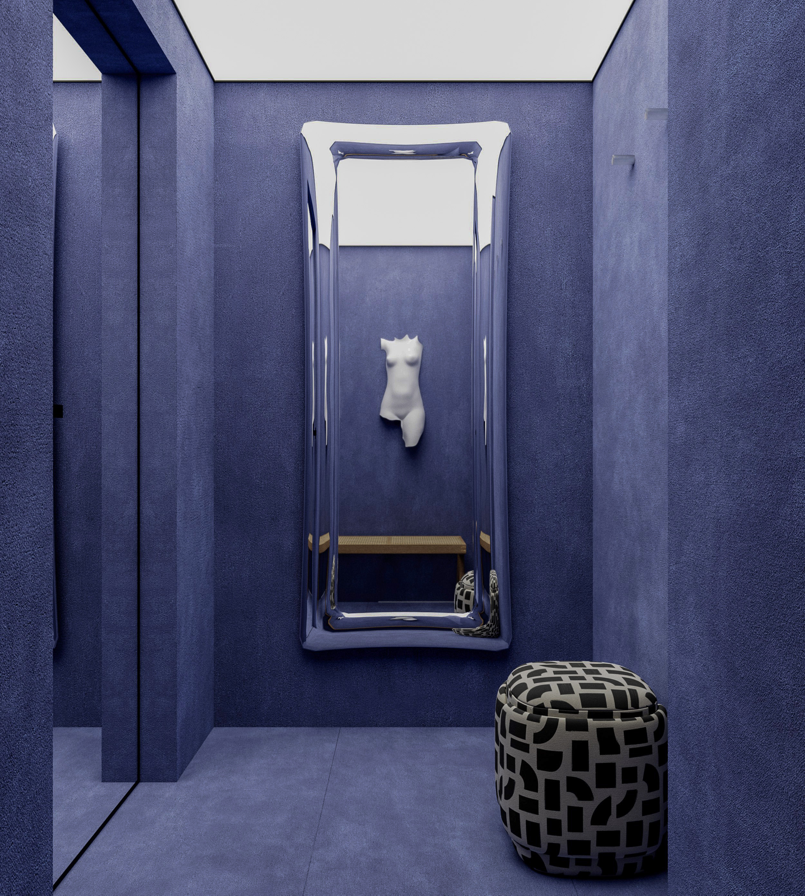
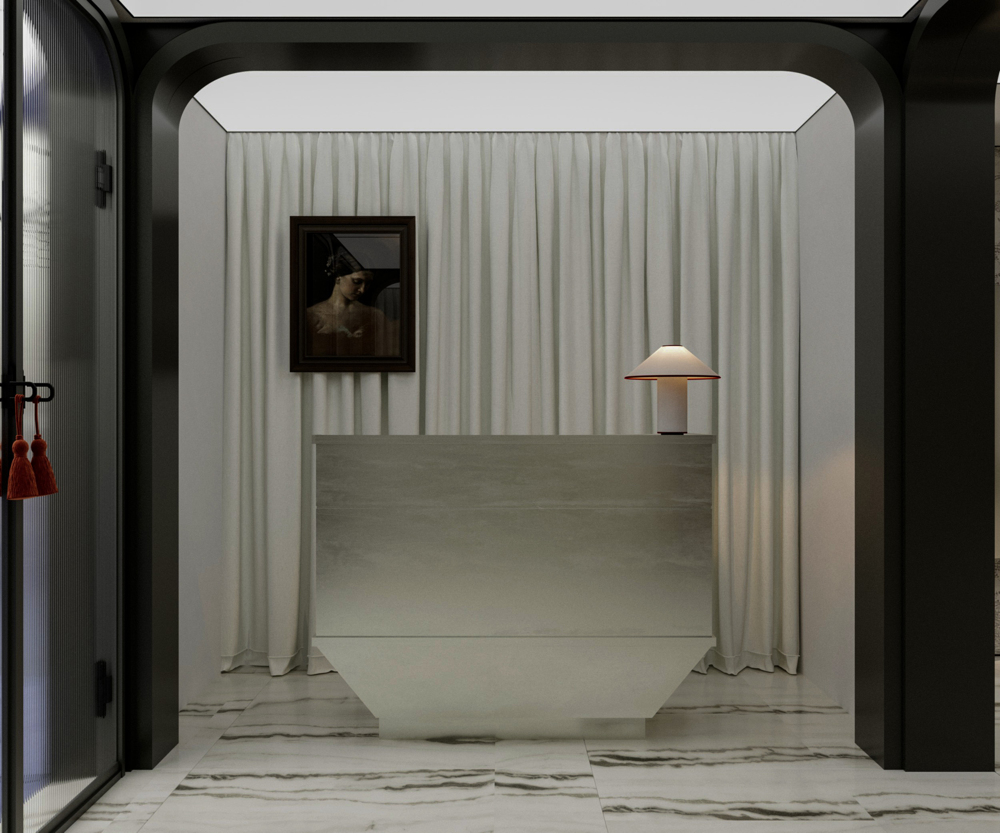

Fashion Retail / Lounge Space
Kurunkoo
- Year
- 2026
- Location
- Muscat, Oman
- Scope
- Concept / Layout / Visualization
Kurunkoo is a contemporary fashion retail and lounge concept designed around slow browsing, curated product presentation, and moments of pause. Stainless steel surfaces, soft textiles, gallery-inspired displays, and sculptural fitting rooms create a retail experience that feels refined and intimate.







